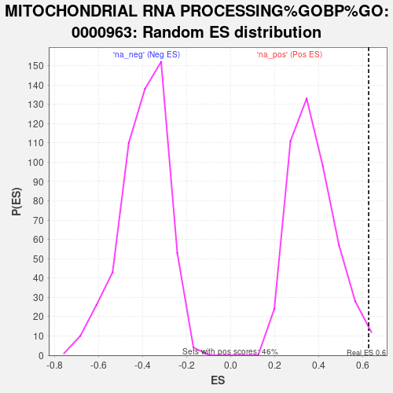

| | | Dataset | deg_ms |
| Phenotype | NoPhenotypeAvailable |
| Upregulated in class | na_pos |
| GeneSet | MITOCHONDRIAL RNA PROCESSING%GOBP%GO:0000963 |
| Enrichment Score (ES) | 0.6275814 |
| Normalized Enrichment Score (NES) | 1.6678157 |
| Nominal p-value | 0.0064794817 |
| FDR q-value | 0.7450931 |
| FWER p-Value | 1.0 |
Table: GSEA Results Summary
 Fig 1: Enrichment plot: MITOCHONDRIAL RNA PROCESSING%GOBP%GO:0000963
Fig 1: Enrichment plot: MITOCHONDRIAL RNA PROCESSING%GOBP%GO:0000963
Profile of the Running ES Score & Positions of GeneSet Members on the Rank Ordered List

Fig 2: MITOCHONDRIAL RNA PROCESSING%GOBP%GO:0000963: Random ES distribution
Gene set null distribution of ES for MITOCHONDRIAL RNA PROCESSING%GOBP%GO:0000963